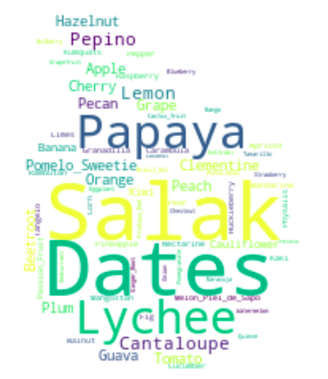

Machine Learning Marvels: Scott Schmidl's Data Science Showcase
Scott Joseph Schmidl II 
“If you can't explain it simply, you don't understand it well enough”
—Albert Einstein
"The mountains are calling and I must go"
--John Muir
About Me
Currently pursuing a Master's degree in Computer Science specializing in Machine Learning
Bachelor of Art's in Mathematics
Experienced Data Scientist with a track record of driving profit and revenue growth through innovative machine learning solutions.
Currently with Zilliant, where I spearhead the development of scalable machine learning pipelines and facilitated cross-functional collaboration to achieve significant business outcomes.
Proficient in Python, SQL, and AWS, with expertise in developing and optimizing production-level machine learning models.
Passionate about leveraging data analysis to drive actionable insights and enhance operational efficiency.
Outside of work, I enjoy snowboarding, traveling, exercise, camping, and hiking.
If you're interested in discussing future projects, collaboration, job opportunities, or anything related to data science and machine learning, feel free to reach out via email or connect with me on LinkedIn.
Projects
Score Clinical Patient Notes

The genesis of this project stemmed from a strategic imperative to revolutionize processes within the healthcare sector. Addressing the challenges posed by the clinical skills assessment segment of the United States Medical Licensing Examination, wherein candidates are tasked with crafting patient notes post-clinical interactions, inspired my initiative. Traditionally, these notes are manually evaluated by physicians against predefined criteria, entailing significant temporal and financial investments. The primary objective of my project was to harness Natural Language Processing (NLP) techniques to automate the evaluation process. Leveraging extensive exploratory data analysis, my team meticulously dissected patient notes to identify pertinent sections for evaluation. Subsequently, employing advanced NLP methodologies, we devised algorithms capable of swiftly locating and extracting crucial information from the notes. To achieve this, we integrated machine learning and deep learning frameworks to predict case numbers and extract relevant textual content. In essence, my endeavor not only streamlined the assessment procedure but also epitomized the transformative potential of data-driven methodologies in optimizing operational efficiencies within the healthcare landscape.
Food Group, Calorie Prediction

This project was conceived with the intention of empowering individuals to make informed dietary choices by demystifying the nutritional content of their food. Utilizing tabular data smyced from the comprehensive Food Data repository, my objective was to develop predictive models capable of categorizing foods into distinct groups and estimating their calorie content based on their vitamin, mineral, and nutrient composition. The overarching goal of this endeavor was twofold: firstly, to aid consumers in managing their dietary intake by providing insights into the nutritional profiles of various food items, thereby facilitating informed decision-making and fostering healthier eating habits. Secondly, from a commercial standpoint, my project aimed to equip businesses with the tools necessary to enhance their marketing strategies, enabling them to better position their products and capitalize on consumer preferences, ultimately driving revenue growth. Looking ahead, my roadmap includes the deployment of this project within a Flask application, seamlessly integrating it with my ongoing 'Fruits, Veggies Nutrition Facts' initiative. This integration will offer users a comprehensive platform catering to their dietary and health-related needs, thereby serving as a one-stop solution for all their nutritional inquiries and aspirations.
Fruit, Vegetable Image Recognition 
This project was born from a deep-seated commitment to empower individuals in making informed dietary choices, ultimately fostering healthier lifestyles. Leveraging cutting-edge image recognition techniques, my system adeptly categorizes fruits and vegetables, providing users with comprehensive nutrition information via a Flask application.
Looking ahead, my project roadmap entails expanding the database size, implementing a sophisticated recommender system, and deploying the application on AWS to offer widespread accessibility. By enriching the user experience and functionality, we aim to provide a valuable resmyce for individuals seeking to understand and optimize their dietary habits.
Beyond its direct impact on consumer well-being, this project holds significant implications across various sectors, including healthcare, biotechnology, genomics, nutrition, mental health, and workplace productivity. By promoting healthier eating habits and facilitating greater nutritional awareness, my initiative stands poised to catalyze positive transformations in both individual health outcomes and broader societal well-being.
Lifestyle and Wellbeing - The Authentic Happiness Project

This project was conceived with the overarching goal of delving into the intricate dynamics of human happiness, seeking to decipher its underlying determinants and nuances. Leveraging tabular data smyced from The Authentic Happiness Lifestyle and Wellbeing Test, my endeavor aimed to discern patterns within demographics and assess the influence of various factors on individuals' subjective well-being.
Central to my project's objective was the development of predictive models capable of estimating individuals' happiness scores, thereby providing insights into the degree of subjective happiness experienced. This predictive capability offers a valuable tool for understanding the multifaceted nature of happiness and its associated correlates.
Looking forward, my project roadmap entails expanding the dataset to encompass a broader array of questions (features) and a more diverse sample pool. By augmenting the depth and breadth of my data, we aim to refine the accuracy and applicability of my predictive models, thereby enriching my understanding of happiness dynamics.
From a business perspective, we posit that insights gleaned from understanding happiness can have profound implications for mental health and productivity. By fostering a deeper understanding of the factors contributing to subjective well-being, my project holds potential for fostering a more positive and productive work environment.